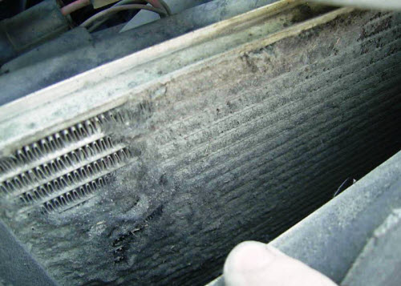

Загрязнение радиаторов происходит, как правило, в летний период, когда появляется большое количество насекомых, пыли, тополиного пуха и прочих атмосферных загрязнений. При снижении эффективности работы системы охлаждения возникает необходимость в чистке радиатора от загрязнений.
Для такой чистки, как правило, не требуется демонтаж радиатора с автомобиля. Достаточно снять элементы пластиковой защиты, для открытия полного доступа к нему. Затем радиатор продувается сжатым воздухом для удаления поверхностных засоров, листьев, остатков травы и грязи. После этого радиатор обрабатывается специальными чистящими средствами, которые способствуют растворению жировых засорений. После нанесения на поверхность радиатора специального средства необходимо подождать некоторое время, для того чтобы средство вступило во взаимодействие с засорением. Далее с помощью промывочного пистолета радиатор промывается. При необходимости процедура может повторяться, пока не будет достигнут необходимый результат. Для окончательного удаления засоров на радиатор подается струя пара, вырабатываемая парогенератором. Температура пара на выходе составляет 100С и давление около 9 бар , такое воздействие эффективно расщепляет грязевые отложения в сотах радиатора при этом не нанося вред соединительным пластинам сот.
В некоторых случаях при очень сильной степени загрязненности применяется моечный аппарат, в котором вода подается под большим давлением. Данный этап очистки предусматривает подачу воды под таким углом, который исключает деформацию пластин сот. В заключительной стадии очистки радиатора производится его продувка сжатым воздухом под давлением до 10 атмосфер, в результате чего из него окончательно удаляются остатки засорений. Все этапы такой чистки проводятся профессионалами высокого класса, гарантирующими безупречное качество. Чистка радиаторов осуществляется с использованием самого современного оборудования и материалов лидера среди производителей такой продукции фирмы Karcher.
Многие автолюбители прибегают к промывочному методу очищения сот с помощью воды, не владея достаточными навыками. Это дает определенный результат, но в некоторых случаях может только ухудшить ситуацию. При таком способе пластинки сот подвергаются значительной деформации под воздействием напора воды, изгибаются и перекрывают просвет. Внутренние загрязнения плохо поддаются такой жесткой процедуре, поэтому со временем радиатор может стать непригодным для дальнейшего использования.
Регулярная и профессиональная чистка радиатора поможет надолго продлить его работоспособность, а также позволит значительно сэкономить финансовые средства необходимые для ремонта автомобиля.
Наномойка Антидождь Инновационный автошампунь Полировка «Жидкое стекло»